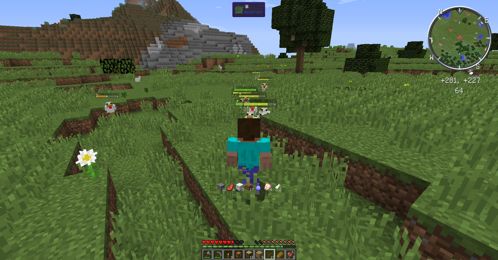
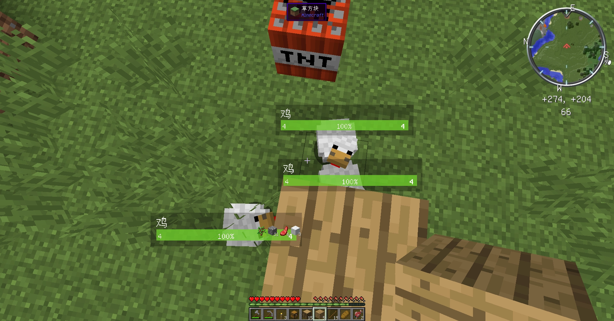
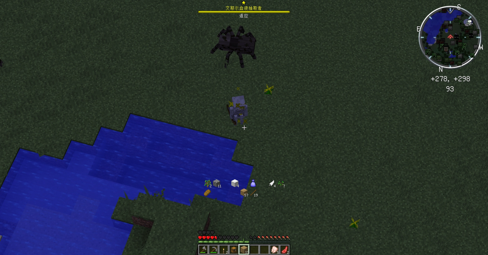
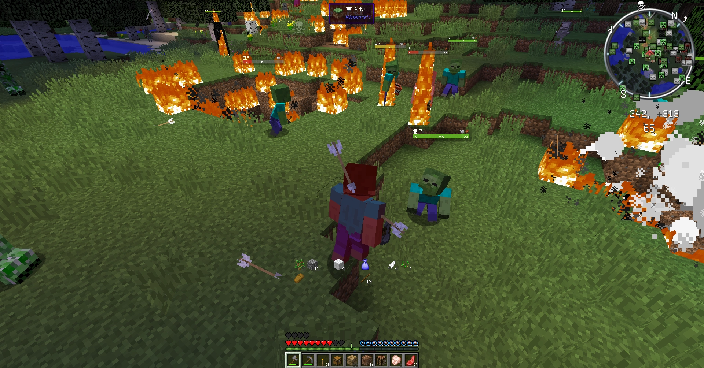
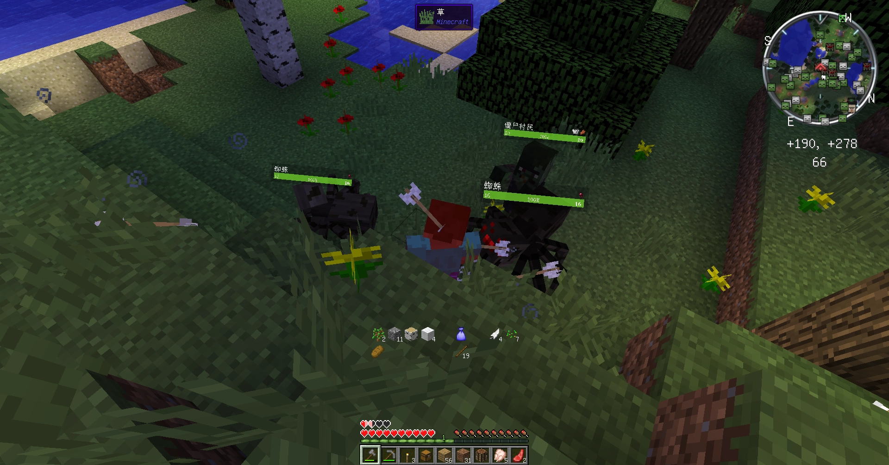
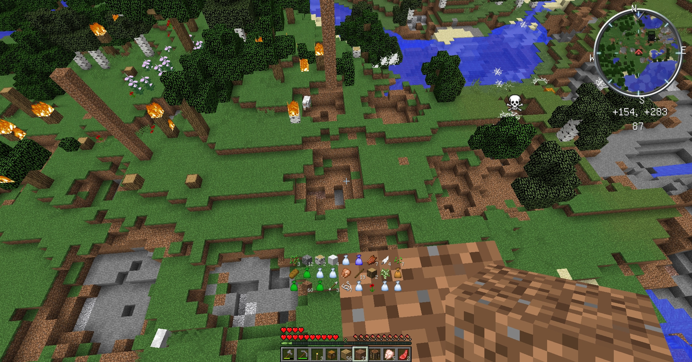

简介:这是一个Minecraft的整合包,因为它太小了,只有个Mod,因此我们叫它"MinecraftPack",而不是"MinecraftModPack"
本整合包采用CuresForge格式
这个整合包极大的增加了Minecraft的难度.
在这个整合包里,一块泥土都是珍贵的.
如果你认为原版Minecraft的难度太简单了,那就尝试一下这个整合包吧!
不要以为我们采用了CurseForge的格式就发布在CuresForge上,我们并不在CuresForge上发布任何东西
作者:ZiChenTEAM
介绍
这个整合包叫做"临危不惧",英文是"Be not Afraid of Danger"(翻译软件).简写为:"BAD",而bad在英语中有"特别好玩的"的意思,而我们正希望你能愉快的游玩此整合包.
这个整合包基于Minecraft 1.12.2版本制作,采用Forge API(Forge版本:14.23.5.2859)如果你还没有背会Minecraft 1.12.2的合成表,请前往Minecraft Wiki背好,因为在这个整合包里每一秒都是珍贵的!
请使用Java JDK 8运行此整合包,推荐使用64位Java.如果您还没有Java,请点击:这里,跳转Java的官方网站下载Java JDK 8,如果你没有Oracle账号,可以使用共享账号(我们并不保证使用共享账号的安全性)
Mod列表
- AppleCore
- AtomicStryker's Battle Towers
- AtomicStryker's Infernal Mobs
- BetterFps
- Bloodmoon
- Carry On
- CensoredASM
- Champions
- Chunk Animator
- Collective
- CreativeCore
- Damage Tilt
- EnhancedVisuals
- EpicSiegeMod
- FastFurnace
- FastWorkbench
- Foamfix
- GraveStone Mod
- Hardcore Darkness
- Humbling Bundle
- Hwyla
- iChunUtil
- It's the little things
- ItemPhysic Lite
- InventoryHUD+
- Inventory Totem
- Iron Chests
- JEI
- LootBags
- Mad Villagers
- MagicClover
- Memory Cleaner Mod
- MixinBooter
- Mo' Bends
- Mob Amputation
- Mob Dismemberment
- Mouse Tweaks
- Neat
- Ore Excavation
- Passable Leaves
- Phosphor
- Placebo
- SimpleLeather
- Sit
- Spartan Weaponry
- Spice of Life: Carrot Edition
- Starter Kit
- The Legend of Herobrine
- ToroHealth Damage Indicators
- Tree Growing Simulator
- VoxelMap
- XP From Harvest
按照首字母A-Z排序,超链接均导向www.curseforge.com.有些Mod的网站我们暂时没有找到,我们一定会及时补上.
MagicClover没有找到curseforge的界面,所以超链接导向McMod
No cheating没有找到Curseforge所以导向官网
如果你喜欢其中的某个Mod,请前往www.curseforge.com支持Mod原作者
下载
- 下载:整合包(Github Releases)
- 下载:难度适中的存档(钻石大陆)(本站)
下载注意:此整合包使用CurseForge制作,推荐使用CurseForge安装并游玩.也可以使用第三方启动器(包括但不限于:HMCL,PCL2,均不保证链接永久有效)
游戏截图
↑那座高塔↑
↑被鸡攻击↑
↑鸡使用了TNT↑
↑第一天晚上的精英怪↑

↑射程超远的骷髅弓箭手↑
↑被怪物围攻↑
↑无处可逃↑
↑第二天白天↑
技巧
以下技巧、攻略仅适用于默认设置下,不保证在其他设置下的可用性.(更新可能不及时)
1.注意与误区
- 只能搭建庇护所时,由于怪物们会使用TNT,苦力怕会隔墙爆炸,所以在地面搭建庇护所并不可靠,庇护所的搭建详见:2.家
- 尽量快速的收集木头、石头、泥土等物资,原木留下一些用来烧成木炭,木板可以搭建庇护所,泥土可以用来紧急情况的踮脚和逃跑
- 因为MagicClover的效果,可以使用"四叶草"(通过破坏草获得)来快速度过前期(出现的机率小,而且较大可能性都是苦力怕)
- 如果你使用了The Legend of Herobrine的祭坛,再加上EnhancedVisuals的受伤效果,那么此整合包就有可能变成一个恐怖整合包
- 如果你没有开启"死亡不掉落"(又称:保留物品栏)请使用箱子,但要避免被怪物丢出的TNT和苦力怕炸爆.
- 如果你没有开启"死亡不掉落"(又称:保留物品栏),Gravestone会把你的掉落物变成一个"墓碑",配合VoxelMap的传送功能可以更方便.
- 建议开启奖励箱,以减少难度
- 使用武器攻击怪物时,有记录将它"截肢",如果你砍下了它的头颅,它将会马上死亡.(注:与Mo' Bends不兼容,容易不显示头颅的掉落效果,因为Mo' Bends的弓箭轨迹显示,并未关闭Mo' Bends.)
- 请不要在装备不好的情况下攻击动物,因为它们会反击(不是一个,是一群!)
- 请不要破坏村庄,如果破坏村庄Mad Villagers可以让所有村民攻击你!!(村民们不会攻击破坏村庄的怪物)
- 小心晚上自然生成的烈焰人,它可能让你的木头房子着火
- 怪物有几率原地复活!
- 使用Iron Chests带来的黑曜石箱子可以防爆!!!
- 感谢Starter Kit,它会给你初始的装备
- 感谢Humbling Bundle,它可以让你的凋落物翻倍
- Inventory Totem可以让不死图腾在背包里生效
- 每天晚上有10%的几率升起"血月",这时你不能睡觉,(这都是Bloodmoon干的),血月时的怪物极多,虽然只对地面生效,但我们不推荐你去矿洞,由于EpicSiegeMod的加持,怪物可以通过你的气味来找到你,而且矿洞一般都是不见阳光的,所以亡灵生物不能燃烧.血月时推荐你在家休息.(注:第一天因为满月,所以是血月)
- 如果你对你的装备与技术足够自信的话可以试着挑战BattleTowers中的"高塔"(非官方名字),也就是一个非常高的高塔,里面有很多箱子,可以快速富有起来,由于AtomicStryker's Infernal Mobs的加持,打这些怪非常困难,而且需要防爆(怪物可能炸坏地板),开启最上面的箱子后会有一个"高塔巨人"(非官方名字),它极其的庞大,击败它可以掉落钻石等珍贵矿物.
- InventoryHUD+可以让你方便的查看背包中物品、药水效果和装备耐久.默认配置按键"O"
- 由于SimpleLeather,你可以尝试使用熔炉烧制没有什么用的腐肉,你可以得到皮革,可以与村民交易获得更多资源
- Ore Excavation可以让你在按下"~"时连锁采集同类物品,这很有帮助.
- 使用"M"键打开小地图,右键可以传送到你已经加载过的区块里
- 如果前期搞不到水桶这种可以防止摔死的东西，可以用半砖或楼梯来代替，如果帮你免于一死，那你要感谢Sit(右键半砖或楼梯即可坐在上面,楼梯需要右键下半部分)
- 不要吝啬你的食物,只要吃的食物种类够多,Spice of Life: Carrot Edition就可以帮你增加生命上限(死亡后不恢复原状)
- 不要认为拿到钻石套是好事,在这个整合包中,没有附魔的钻石套与皮革套差不多.
- 请不要制作盾,因为它无法防住四面八方的攻击
- 小心小僵尸,它们太快了!
- 击败怪物可以获得战利品袋(非官方译名),里面与有可能开出钻石装备等宝物!!
- 打败精英怪可以得到较好的掉落物,有可能掉落特别有用的附魔书
- 种田可以获得经验,用于附魔,是非常安全的做法.
- 即使你度过了艰难的前期,后期有着champions和AtomicStryker's Infernal Mobs的加持,你的刷怪也会非常艰难.
2.家
- 不要把庇护所搭建在地下
- 我认为应该把庇护所搭建在天上,不要太高,也不要太低.大概是40~55个方块左右(旁边不能有高山,否则怪物可能在高山上远程攻击)
- 如果有足够的资源请用防火防爆的方块,前期可以用"圆石",后期可以用"黑曜石"
- 推荐在平原或沙漠搭建庇护所,它们都地势平坦,而且沙漠可以使用"仙人掌"来当作防御,防止怪物靠近(有可能被炸毁,需要及时修复,这很重要)
- 如果使用黑曜石请不要全部封闭,因为怪物可能堵住你唯一的出口.
- 使用无法炸毁的方块一定要够厚,因为苦力怕会隔墙爆炸,小心被苦力怕在家炸死!
个性化
如果你讨厌前期的发育和刷怪,只想要挑战末影龙等Boss.请前往下载点击"下载:难度适中的存档(钻石大陆)"来下载我(原作者)自己的制作的钻石大陆存档,目前支持v0.71及以上版本.
如果你喜欢这个整合包,请前往Github给这个项目一个Star:D
有问题?
你可能需要反馈问题,请使用Github ISSUE或反馈邮箱
反馈邮箱: zichenstudio@outlook.com
建议您使用Github ISSUE进行反馈,Github上的回答会快一些.Github ISSUE的反馈要注意格式,方便我们检查问题,具体格式Here
注意事项: 请更新到最新版本,而且发现问题仍在,再进行反馈
把我的整合包发布到其他平台?请查看Github ISSUE #1
如果我们的行为侵害了您的合法权益,请前往Github Issue通知我们,我们会立刻删除并公开道歉!!
网页制作:Pillar | 部分文案:三哥 | 法律声明 | Github Source
Copyright (c) 2023, ZiChenStudio Official